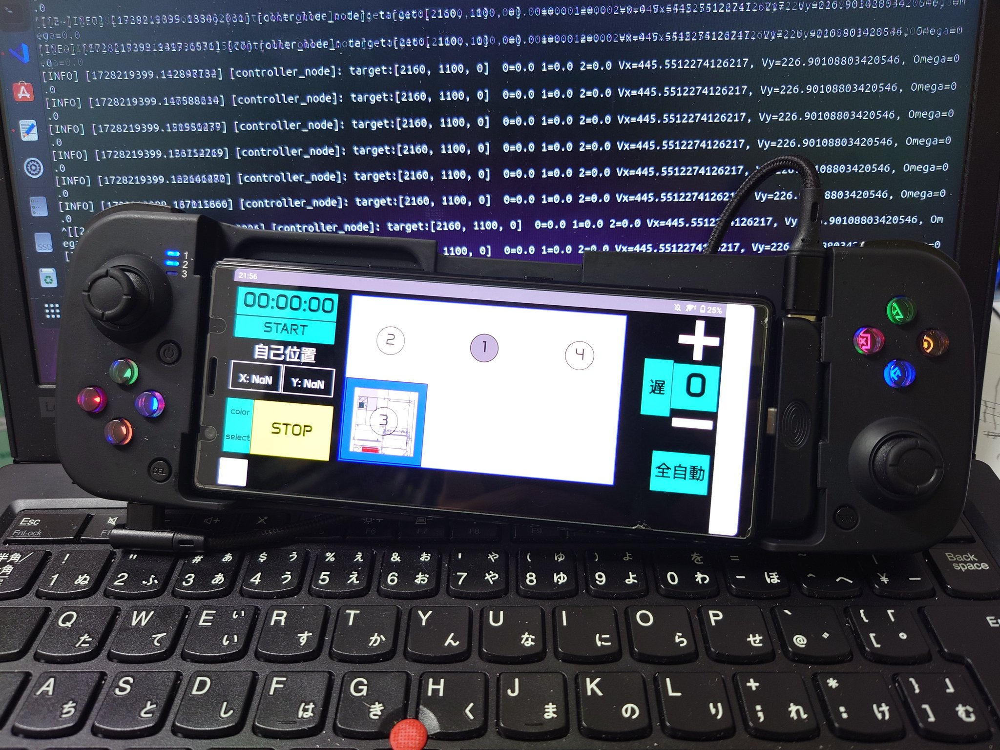

ROS 2 鬮伜ｰゅΟ繝懊さ繝ｳ螳溯ｷｵ邱ｨ-縺昴・1-
迺ｰ蠅・/h2>
- Python 3.10
- ThinkPad L380 Ubuntu 22.04.3 LTS
- ROS2 Humble
蛻昴ａ縺ｫ
縺ｾ縺夲ｼ碁ｫ伜ｰゅΟ繝懊さ繝ｳ縺ｫ縺翫￠繧・ROS2 縺ｮ諢冗ｾｩ縺ｫ縺､縺・※隱ｬ譏弱☆繧具ｼ・/p>
ROS2 繧剃ｽｿ縺・炊逕ｱ
鬮伜ｰゅΟ繝懊さ繝ｳ縺ｮ繝ｭ繝懊ャ繝磯幕逋ｺ縺ｧ縺ｯ・御ｻ･荳九・隕∫ｴ縺梧ｱゅａ繧峨ｌ繧具ｼ・/p>
- 繝ｪ繧｢繝ｫ繧ｿ繧､繝蛻ｶ蠕｡・壹そ繝ｳ繧ｵ繝ｼ諠・ｱ繧貞・逅・＠縺ｪ縺後ｉ繝ｭ繝懊ャ繝医ｒ繧ｹ繝繝ｼ繧ｺ縺ｫ蜍穂ｽ懊＆縺帙ｋ・・/li>
- 繝｢繧ｸ繝･繝ｼ繝ｫ蛹・/strong>・夊､・焚縺ｮ讖溯・・医Δ繝ｼ繧ｿ繝ｼ蛻ｶ蠕｡・檎判蜒丞・逅・ｼ御ｽ咲ｽｮ謗ｨ螳壹↑縺ｩ・峨ｒ蛻・屬縺暦ｼ碁幕逋ｺ縺励ｄ縺吶￥縺吶ｋ・・/li>
- 騾壻ｿ｡縺ｮ邁｡邏蛹・/strong>・壼推讖溯・繧呈球蠖薙☆繧九ヮ繝ｼ繝蛾俣縺ｧ縺ｮ繝・・繧ｿ縺ｮ繧・ｊ蜿悶ｊ繧堤ｰ｡貎斐↓縺吶ｋ・・/li>
- 諡｡蠑ｵ諤ｧ・壽ｩ溯・霑ｽ蜉縺後＠繧・☆縺・ｧ矩縺ｫ縺吶ｋ・・/li>
- 騾壻ｿ｡縺ｮ邁｡邏蛹・/strong>・壼推讖溯・繧呈球蠖薙☆繧九ヮ繝ｼ繝蛾俣縺ｧ縺ｮ繝・・繧ｿ縺ｮ繧・ｊ蜿悶ｊ繧堤ｰ｡貎斐↓縺吶ｋ・・/li>
ROS2 縺ｯ・後％繧後ｉ縺ｮ隕∫ｴ繧呈ｺ縺溘☆縺溘ａ縺ｮ蜆ｪ繧後◆繝輔Ξ繝ｼ繝繝ｯ繝ｼ繧ｯ縺ｧ縺ゅｋ・・/p>
縺昴％縺ｧ 2024 蟷ｴ鬮伜ｰゅΟ繝懊さ繝ｳ A 繝√・繝縺ｮ Roboware 繧貞渕縺ｫ隗｣隱ｬ繧偵＠縺ｦ縺・￥・・/p>
https://github.com/SkenHub/2024_A_ROS2_Roboware
繧ｷ繧ｹ繝・Β讒狗ｯ・/h2>
ROS2 繧堤畑縺・◆繧ｷ繧ｹ繝・Β縺ｮ蜈ｨ菴捺ｧ区・
ROS2 繧貞茜逕ｨ縺励◆繝ｭ繝懊さ繝ｳ縺ｮ繧ｷ繧ｹ繝・Β縺ｧ縺ｯ・御ｻ･荳九・繧医≧縺ｪ讒区・繧貞叙繧具ｼ・/p>
- 騾壻ｿ｡螻､・啗ebSocket 繧堤畑縺・◆繧ｹ繝槭・繝医ヵ繧ｩ繝ｳ縺ｨ縺ｮ騾壻ｿ｡
- 蛻ｶ蠕｡螻､・壹Ο繝懊ャ繝医・驕句虚繧定ｨ育ｮ励＠・碁←蛻・↑蛻ｶ蠕｡繧ｳ繝槭Φ繝峨ｒ逕滓・
- 繝上・繝峨え繧ｧ繧｢螻､・壹す繝ｪ繧｢繝ｫ騾壻ｿ｡繧剃ｻ九＠縺ｦ繝槭う繧ｳ繝ｳ縺ｸ蛻ｶ蠕｡繧ｳ繝槭Φ繝峨ｒ騾∽ｿ｡
- 繧ｻ繝ｳ繧ｷ繝ｳ繧ｰ螻､・壹き繝｡繝ｩ繧・LiDAR 繧堤畑縺・◆迺ｰ蠅・ｪ崎ｭ倥→閾ｪ蟾ｱ菴咲ｽｮ謗ｨ螳壹↑縺ｩ
蜷・ｱ､縺ｮ蠖ｹ蜑ｲ繧呈紛逅・☆繧九→谺｡縺ｮ繧医≧縺ｫ縺ｪ繧具ｼ・/p>
| 螻､ | 蠖ｹ蜑ｲ | 蜈ｷ菴鍋噪縺ｪ蜃ｦ逅・ｾ・/th> |
|---|---|---|
| 騾壻ｿ｡螻､ | 繧ｹ繝槭・繝ｻPC 縺ｨ縺ｮ騾壻ｿ｡ | WebSocket 繧剃ｽｿ逕ｨ縺暦ｼ後Θ繝ｼ繧ｶ繝ｼ蜈･蜉帙ｒ蜿門ｾ・/td> |
| 蛻ｶ蠕｡螻､ | 邨瑚ｷｯ險育判繝ｻ蛻ｶ蠕｡ | 菴咲ｽｮ謗ｨ螳壹ｒ陦後＞縺ｪ縺後ｉ逶ｮ讓吝慍轤ｹ縺ｸ遘ｻ蜍・/td> |
| 繝上・繝峨え繧ｧ繧｢螻､ | 繝｢繝ｼ繧ｿ繝ｼ繝峨Λ繧､繝舌・蛻ｶ蠕｡ | 騾溷ｺｦ繝ｻ隗帝溷ｺｦ繧偵す繝ｪ繧｢繝ｫ騾壻ｿ｡縺ｧ騾∽ｿ｡ |
| 繧ｻ繝ｳ繧ｷ繝ｳ繧ｰ螻､ | 繝ｭ繝懊ャ繝医・閾ｪ蟾ｱ菴咲ｽｮ謗ｨ螳・/td> | RealSense T265 + 繝槭う繧ｳ繝ｳ縺ｮ繝・・繧ｿ邨ｱ蜷・/td> |
蜷・ヮ繝ｼ繝峨・蠖ｹ蜑ｲ
ROS2 縺ｮ迚ｹ蠕ｴ縺ｨ縺励※・梧ｩ溯・縺斐→縺ｫ繝弱・繝峨ｒ蛻・牡縺励※邂｡逅・〒縺阪ｋ・・莉･荳九↓萓九ｒ遉ｺ縺呻ｼ・/p>
1. WebSocket 騾壻ｿ｡繝弱・繝・(web_socket_node)
- 蠖ｹ蜑ｲ・壹せ繝槭・繧ｳ繝ｳ繝医Ο繝ｼ繝ｩ繝ｼ縺九ｉ縺ｮ謖・､ｺ繧貞女縺大叙繧奇ｼ軍OS2 繝医ヴ繝・け縺ｸ螟画鋤
- 菴ｿ逕ｨ謚陦・/strong>・哥astAPI・係ebSocket・軍OS2 繝代ヶ繝ｪ繝・す繝｣繝ｼ
2. 繧ｳ繝ｳ繝医Ο繝ｼ繝ｩ繝ｼ繝弱・繝・(controller_node)
- 蠖ｹ蜑ｲ・壼女縺大叙縺｣縺滓欠遉ｺ繧偵ｂ縺ｨ縺ｫ逶ｮ讓吝慍轤ｹ繧定ｨ育ｮ励＠・碁←蛻・↑騾溷ｺｦ繝ｻ譁ｹ蜷代・隗帝溷ｺｦ繧堤ｮ怜・
- 驥崎ｦ√↑蜃ｦ逅・/strong>・・/li>
- 邨瑚ｷｯ險育判・育樟蝨ｨ菴咲ｽｮ 竊・逶ｮ讓吩ｽ咲ｽｮ・・/li>
- 騾溷ｺｦ蛻ｶ蠕｡・域怙螟ｧ騾溷ｺｦ繝ｻ蜉騾溷ｺｦ蛻ｶ髯撰ｼ・/li>
- 譁ｹ蜷大宛蠕｡・亥屓霆｢隗貞ｺｦ縺ｮ險育ｮ暦ｼ・/li>
3. 繧ｷ繝ｪ繧｢繝ｫ騾∽ｿ｡繝弱・繝・(serial_send_node)
- 蠖ｹ蜑ｲ・夊ｨ育ｮ励＆繧後◆騾溷ｺｦ謖・､ｺ繧偵す繝ｪ繧｢繝ｫ騾壻ｿ｡縺ｧ繝槭う繧ｳ繝ｳ縺ｸ騾∽ｿ｡
- 騾壻ｿ｡繝輔か繝ｼ繝槭ャ繝・/strong>・・/li>
0xA5 0xA5 [謖・､ｺ逡ｪ蜿ｷ] [繝｢繝ｼ繝云 [Vx] [Vy] [omega]- 115200 bps 縺ｮ繧ｷ繝ｪ繧｢繝ｫ騾壻ｿ｡縺ｧ騾∽ｿ｡
莉･荳九・CAN騾壻ｿ｡繧偵♀縺吶☆繧√☆繧・/p>
4. 繧ｷ繝ｪ繧｢繝ｫ蜿嶺ｿ｡繝弱・繝・(serial_read_node)
- 蠖ｹ蜑ｲ・壹・繧､繧ｳ繝ｳ縺九ｉ縺ｮ繝輔ぅ繝ｼ繝峨ヰ繝・け諠・ｱ繧貞叙蠕励＠・瑚・蟾ｱ菴咲ｽｮ繝・・繧ｿ繧・ROS2 縺ｫ蜈ｬ髢・/li>
- 騾壻ｿ｡繝輔か繝ｼ繝槭ャ繝・/strong>・・/li>
0xA5 0xA5 [蜍穂ｽ懃分蜿ｷ] [繝｢繝ｼ繝云 [X] [Y] [ﾎｸ]- 115200 bps 縺ｮ繧ｷ繝ｪ繧｢繝ｫ騾壻ｿ｡縺ｧ蜿嶺ｿ｡
莉･荳九・CAN騾壻ｿ｡繧偵♀縺吶☆繧√☆繧・/p>
5. 閾ｪ蟾ｱ菴咲ｽｮ謗ｨ螳壹ヮ繝ｼ繝・(position_node)
- 蠖ｹ蜑ｲ・・/li>
- 繝槭う繧ｳ繝ｳ縺ｨ RealSense T265 縺九ｉ縺ｮ閾ｪ蟾ｱ菴咲ｽｮ繝・・繧ｿ繧堤ｵｱ蜷・/li>
- 驥阪∩莉倥″蟷ｳ蝮・〒隱､蟾ｮ陬懈ｭ｣
estimated_position繝医ヴ繝・け繧帝・菫｡
騾壻ｿ｡螻､
鬮伜ｰゅΟ繝懊さ繝ｳ縺ｫ縺翫＞縺ｦ繝ｭ繝懊ャ繝医↓蟇ｾ縺励※謖・ｻ､繧帝√ｋ髫帙・驕髫疲桃菴懊ｒ陦後ｏ縺ｪ縺代ｌ縺ｰ縺ｪ繧峨↑縺・ｼ・縺昴％縺ｧ騾壻ｿ｡繝｢繧ｸ繝･繝ｼ繝ｫ縺ｨ縺励※ ESP32・栗M920 縺ｪ縺ｩ縺梧嫌縺偵ｉ繧後ｋ縺鯉ｼ後％繧後ｉ縺ｫ縺ｯ蝠城｡後′縺ゅｋ・・/p>
- ESP32 縺ｮ蝣ｴ蜷・/strong>
- 2.4GHz 蟶ｯ蝓溘〒騾壻ｿ｡繧定｡後≧縺溘ａ・梧ｷｷ邱壹・蜿ｯ閭ｽ諤ｧ縺悟､ｧ縺阪＞・・/li>
- 螳牙ｮ壹＠縺滄壻ｿ｡繧堤｢ｺ菫昴☆繧九↓縺ｯ蟾･螟ｫ縺悟ｿ・ｦ・ｼ・/li>
- IM920 縺ｮ蝣ｴ蜷・/strong>
- 髮ｻ豕｢豕輔・髢｢菫ゆｸ奇ｼ碁壻ｿ｡騾溷ｺｦ縺ｫ蛻ｶ髯舌′縺ゅｋ・磯聞霍晞屬騾壻ｿ｡蜷代￠縺ｧ縺ゅｊ縲√Μ繧｢繝ｫ繧ｿ繧､繝諤ｧ縺梧ｱゅａ繧峨ｌ繧九Ο繝懊さ繝ｳ縺ｫ縺ｯ荳榊髄縺搾ｼ会ｼ・/li>
縺薙・縺溘ａ・係IFI 繧堤畑縺・◆騾壻ｿ｡繧帝∈謚槭＠・後◎縺ｮ螳溯｣・→縺励※WebSocket繧呈治逕ｨ縺吶ｋ・・ROS縺ｫ縺ｯ蜷後§繝阪ャ繝医Ρ繝ｼ繧ｯ縺ｧ縺ゅｌ縺ｰ繝医ヴ繝・け繧貞・譛峨☆繧九→縺・≧讖溯・縺後≠繧九◆繧￣CtoPC縺ｧ縺ゅｌ縺ｰ・係ebSocket繧貞ｮ溯｣・＠縺ｪ縺上※繧ゅｈ縺・ｼ・/p>
WebSocket 縺ｮ繝｡繝ｪ繝・ヨ
- 繝ｪ繧｢繝ｫ繧ｿ繧､繝騾壻ｿ｡・壹Ο繝懊ャ繝医・謫堺ｽ懊↓蟇ｾ縺暦ｼ御ｽ朱≦蟒ｶ縺ｧ蜿榊ｿ懊〒縺阪ｋ・・/li>
- 蜿梧婿蜷鷹壻ｿ｡・壹Ο繝懊ャ繝医・迥ｶ諷九ｒ繧ｹ繝槭・繝医ヵ繧ｩ繝ｳ縺ｫ騾∽ｿ｡縺吶ｋ縺薙→繧ょ庄・・/li>
- 霆ｽ驥・/strong>・唏TTP 繝ｪ繧ｯ繧ｨ繧ｹ繝医・繧医≧縺ｫ豈主屓繝倥ャ繝諠・ｱ繧帝√ｋ蠢・ｦ√′縺ｪ縺・◆繧・ｼ碁壻ｿ｡縺ｮ雋闕ｷ縺瑚ｻｽ縺・ｼ・/li>
FastAPI 繧貞茜逕ｨ縺励◆ WebSocket 繧ｵ繝ｼ繝舌・縺ｮ螳溯｣・/h2>
WebSocket 騾壻ｿ｡繧・ROS2 縺ｨ騾｣謳ｺ縺輔○繧九◆繧√↓FastAPI繧剃ｽｿ逕ｨ縺吶ｋ・熊astAPI 縺ｯ霆ｽ驥上°縺､鬮俶ｧ閭ｽ縺ｪ Python 縺ｮ Web 繝輔Ξ繝ｼ繝繝ｯ繝ｼ繧ｯ縺ｧ縺ゅｊ・係ebSocket 繧堤ｰ｡蜊倥↓謇ｱ縺医ｋ・・/p>
FastAPI 縺ｮ迚ｹ蠕ｴ
- 髱槫酔譛溷・逅・ｼ・sync/await・牙ｯｾ蠢・/strong>
- 鬮倬溘↑騾壻ｿ｡蜃ｦ逅・ｼ・tarlette 繝吶・繧ｹ・・/strong>
- 邁｡蜊倥↑ WebSocket 螳溯｣・/strong>
WebSocket 繧ｵ繝ｼ繝舌・縺ｮ蝓ｺ譛ｬ螳溯｣・ｼ・astAPI・・/h3>
莉･荳九・繧ｳ繝ｼ繝峨・・熊astAPI 繧剃ｽｿ逕ｨ縺励※ WebSocket 繧ｵ繝ｼ繝舌・繧剃ｽ懈・縺暦ｼ後け繝ｩ繧､繧｢繝ｳ繝医→縺ｮ騾壻ｿ｡繧堤ｮ｡逅・☆繧具ｼ・/p>
web_socket_node.py・磯壻ｿ｡繝弱・繝会ｼ・/strong>
import threading
import rclpy
from rclpy.node import Node
from std_msgs.msg import String, Float32MultiArray
from fastapi import FastAPI, WebSocket as FastAPIWebSocket
from fastapi.responses import HTMLResponse
import uvicorn
import os
# IP繧｢繝峨Ξ繧ｹ縺ｨ繝昴・繝郁ｨｭ螳・/span>
IP_ADDRESS = '192.168.98.216'
PORT = 8010
# UI繝輔ぃ繧､繝ｫ・・R1_UI.txt`・峨・繝代せ
UI_PATH = '/home/altair/2024_A_ROS2_Roboware/src/robot_controller/R1_UI.txt'
# FastAPI縺ｮ繧､繝ｳ繧ｹ繧ｿ繝ｳ繧ｹ繧剃ｽ懈・
app = FastAPI()
# UI縺ｮ隱ｭ縺ｿ霎ｼ縺ｿ
if not os.path.exists(UI_PATH):
raise FileNotFoundError(f'File not found: {UI_PATH}')
with open(UI_PATH, 'r') as f:
html = f.read()
class WebSocketNode(Node):
def __init__(self):
super().__init__('web_socket_node')
self.send_data = ''
self.pub = self.create_publisher(String, 'web_socket_pub', 10)
self.sub = self.create_subscription(Float32MultiArray, 'estimated_position', self.callback, 10)
@app.get("/")
async def get():
return HTMLResponse(html)
@app.websocket('/ws')
async def websocket_endpoint(websocket: FastAPIWebSocket):
await websocket.accept()
try:
while True:
receive_data = await websocket.receive_text()
msg = String()
msg.data = receive_data
self.pub.publish(msg)
string_send_data = ",".join(map(str, self.send_data))
await websocket.send_text(string_send_data)
except Exception as e:
print(f'WebSocket error: {str(e)}')
def callback(self, sub_msg):
self.send_data = sub_msg.data
def run_ros2():
rclpy.init()
node = WebSocketNode()
rclpy.spin(node)
rclpy.shutdown()
def run_fastapi():
uvicorn.run(app, host=IP_ADDRESS, port=PORT)
def main():
ros2_thread = threading.Thread(target=run_ros2)
ros2_thread.start()
fastapi_thread = threading.Thread(target=run_fastapi)
fastapi_thread.start()
ros2_thread.join()
fastapi_thread.join()
if __name__ == '__main__':
main()
WebSocket 縺ｮ蛻ｩ逕ｨ萓・/h3>
- 繧ｯ繝ｩ繧､繧｢繝ｳ繝茨ｼ医せ繝槭・繝医ヵ繧ｩ繝ｳ・峨°繧・code>ws://<PC縺ｮIP>:8000/ws縺ｫ謗･邯夲ｼ・/li>
- JSON 蠖｢蠑上・繧ｳ繝槭Φ繝峨ｒ騾∽ｿ｡.
- WebSocket 繝弱・繝峨′ ROS2 縺ｮ繝医ヴ繝・け縺ｫ繝・・繧ｿ繧偵ヱ繝悶Μ繝・す繝･.
- ROS2 繝弱・繝峨′蜃ｦ逅・＠,繝ｭ繝懊ャ繝医ｒ蛻ｶ蠕｡.
- 繝ｭ繝懊ャ繝医・閾ｪ蟾ｱ菴咲ｽｮ繝・・繧ｿ繧・WebSocket 邨檎罰縺ｧ繧ｹ繝槭・繝医ヵ繧ｩ繝ｳ縺ｫ騾∽ｿ｡.
R1_UI.txt・・I 繝輔ぃ繧､繝ｫ・峨・菴懈・譁ｹ豕・/h3>
R1_UI.txt・・I 繝輔ぃ繧､繝ｫ・峨・菴懈・譁ｹ豕・/h3>
R1_UI.txt 縺ｯ Web 繝壹・繧ｸ縺ｮ UI 繧定ｨ倩ｿｰ縺励◆ HTML 繝輔ぃ繧､繝ｫ縺ｧ縺・縺薙・繝輔ぃ繧､繝ｫ縺ｯ繧ｹ繝槭・繝医ヵ繧ｩ繝ｳ繧・PC 縺ｮ繝悶Λ繧ｦ繧ｶ縺九ｉ繧｢繧ｯ繧ｻ繧ｹ縺・繝懊ち繝ｳ繧・ず繝ｧ繧､繧ｹ繝・ぅ繝・け繧呈桃菴懊☆繧九％縺ｨ縺ｧ繝ｭ繝懊ャ繝医ｒ蛻ｶ蠕｡縺吶ｋ縺溘ａ縺ｫ菴ｿ逕ｨ縺励∪縺・
UI 繝輔ぃ繧､繝ｫ縺ｮ蝓ｺ譛ｬ讒矩
UI 縺ｯ HTML + CSS 縺ｧ菴懈・縺輔ｌ縺ｦ縺翫ｊ,荳ｻ隕√↑隕∫ｴ縺ｯ莉･荳九・騾壹ｊ縺ｧ縺・
萓・/p>
<!DOCTYPE html>
<html>
<head>
<meta charset="UTF-8" />
<meta name="viewport" content="width=device-width, initial-scale=1.0" />
<title>Robot Controller</title>
<style>
body {
background: black;
color: white;
font-family: Arial, sans-serif;
text-align: center;
}
.button {
display: inline-block;
width: 100px;
height: 50px;
margin: 10px;
background-color: blue;
color: white;
font-size: 20px;
border: none;
cursor: pointer;
}
.button:hover {
background-color: darkblue;
}
.joystick-container {
position: absolute;
bottom: 20px;
left: 50%;
transform: translateX(-50%);
}
</style>
</head>
<body>
<h1>Robot Controller</h1>
<button class="button" onclick="sendCommand('1')">Move 1</button>
<button class="button" onclick="sendCommand('2')">Move 2</button>
<button class="button" onclick="sendCommand('3')">Move 3</button>
<div class="joystick-container">
<input type="range" id="joystickX" min="0" max="200" value="100" />
<input type="range" id="joystickY" min="0" max="200" value="100" />
<button class="button" onclick="sendJoystick()">Send Joystick</button>
</div>
<script>
const ws = new WebSocket("ws://192.168.98.216:8010/ws");
ws.onmessage = function (event) {
console.log("Received: " + event.data);
};
function sendCommand(command) {
ws.send(command);
}
function sendJoystick() {
let lx = document.getElementById("joystickX").value;
let ly = document.getElementById("joystickY").value;
let message = `0,1,0,0,0,0,0,${lx},${ly},100,100`;
ws.send(message);
}
</script>
</body>
</html>
UI 繝輔ぃ繧､繝ｫ縺ｮ蠖ｹ蜑ｲ
- 繝懊ち繝ｳ蛻ｶ蠕｡・壹・繧ｿ繝ｳ繧呈款縺吶→,迚ｹ螳壹・蜻ｽ莉､・井ｾ・
Move 1・峨′ WebSocket 邨檎罰縺ｧ騾∽ｿ｡縺輔ｌ縺ｾ縺・ - 繧ｸ繝ｧ繧､繧ｹ繝・ぅ繝・け蛻ｶ蠕｡・壹せ繝ｩ繧､繝繝ｼ縺ｧ蛟､繧貞､画峩縺・繧ｸ繝ｧ繧､繧ｹ繝・ぅ繝・け縺ｮ X,Y 蛟､繧帝∽ｿ｡縺吶ｋ縺薙→縺ｧ,繝ｭ繝懊ャ繝医・遘ｻ蜍輔ｒ蛻ｶ蠕｡縺ｧ縺阪∪縺・
螳滄圀縺ｮ繝ｭ繝懊さ繝ｳ縺ｧ縺ｯ

螳滄圀縺ｫ菴ｿ逕ｨ縺励◆繧ｳ繝ｼ繝峨・隗｣隱ｬ繧定｡後≧・・/p>
ControllerNode 縺ｮ隗｣隱ｬ
ControllerNode 縺ｯ・後Ο繝懊ャ繝医・遘ｻ蜍募宛蠕｡繧呈球蠖薙☆繧・ROS2 繝弱・繝峨〒縺ゅｋ・・br />
WebSocket 繧帝壹§縺ｦ騾∽ｿ｡縺輔ｌ縺滓欠莉､繧貞女縺大叙繧奇ｼ後Ο繝懊ャ繝医・遘ｻ蜍慕岼讓吶ｒ豎ｺ螳壹＠・碁←蛻・↑騾溷ｺｦ謖・ｻ､繧帝∽ｿ｡縺吶ｋ・・
繝弱・繝峨・讎りｦ・/strong>
| 鬆・岼 | 隱ｬ譏・/th> |
|---|---|
| 繝弱・繝牙錐 | controller_node |
| 雉ｼ隱ｭ繝医ヴ繝・け | web_socket_pub・・ebSocket 縺九ｉ縺ｮ謖・ｻ､・会ｼ・code>estimated_position・育樟蝨ｨ菴咲ｽｮ諠・ｱ・・/td>
|
| 逋ｺ陦後ヨ繝斐ャ繧ｯ | cmd_vel・磯溷ｺｦ謖・ｻ､繧帝∽ｿ｡・・/td>
|
| 讖溯・ | 蜿嶺ｿ｡縺励◆謖・ｻ､縺ｫ蝓ｺ縺･縺搾ｼ後Ο繝懊ャ繝医・遘ｻ蜍慕岼讓吶ｒ豎ｺ螳壹＠・碁溷ｺｦ繝ｻ隗帝溷ｺｦ繧定ｨ育ｮ励＠縺ｦ騾∽ｿ｡縺吶ｋ |
蛻晄悄蛹門・逅・/strong>
class ControllerNode(Node):
def __init__(self):
super().__init__('controller_node')
ControllerNode 繧ｯ繝ｩ繧ｹ繧・ROS2 繝弱・繝峨→縺励※蛻晄悄蛹悶☆繧具ｼ・br />
ROS2 縺ｮ繝弱・繝峨→縺励※讖溯・縺吶ｋ縺溘ａ縺ｫ super().__init__('controller_node') 繧貞他縺ｳ蜃ｺ縺呻ｼ・
繝医ヴ繝・け縺ｮ雉ｼ隱ｭ繝ｻ逋ｺ陦・/strong>
self.subscription = self.create_subscription(
String,
'web_socket_pub',
self.listener_callback,
10)
self.publisher_ = self.create_publisher(Float32MultiArray, 'cmd_vel', 10)
self.position_subscription = self.create_subscription(
Float32MultiArray,
'estimated_position',
self.update_position_callback,
10)
web_socket_pub 縺ｮ繝・・繧ｿ繧定ｳｼ隱ｭ縺暦ｼ・code>listener_callback 髢｢謨ｰ繧貞ｮ溯｡後☆繧・- cmd_vel 繝医ヴ繝・け繧堤匱陦後＠・檎ｧｻ蜍募宛蠕｡縺ｮ謖・ｻ､繧帝∽ｿ｡縺吶ｋ
- estimated_position 縺ｮ繝・・繧ｿ繧定ｳｼ隱ｭ縺暦ｼ檎樟蝨ｨ菴咲ｽｮ縺ｮ譖ｴ譁ｰ繧定｡後≧
逶ｮ讓吝慍轤ｹ縺ｮ險ｭ螳・/strong>
self.locations_normal = {
'1': [2160, 1100, 0],
'2': [0, 1100, 0],
'3': [0, 0, 0],
'4': [3000, 1500, 0],
'5': [3000, 1500, 90]
}
self.locations_inverted = {
'1': [-1480, 1100, 0],
'2': [0, 1100, 0],
'3': [0, 0, 0],
'4': [-3000, 1500, 0],
'5': [0, 1500, 90]
}
0・磯壼ｸｸ繝｢繝ｼ繝会ｼ峨→ 1・・霆ｸ蜿崎ｻ｢繝｢繝ｼ繝会ｼ峨〒逶ｮ讓吝ｺｧ讓吶ｒ蛻・ｊ譖ｿ縺医ｋ・・br />
繝｢繝ｼ繝・1 縺ｧ縺ｯ X 蠎ｧ讓吶′雋縺ｮ蛟､縺ｨ縺ｪ繧奇ｼ悟ｷｦ蜿ｳ蟇ｾ遘ｰ縺ｮ蠎ｧ讓咏ｳｻ縺ｨ縺ｪ繧具ｼ・
WebSocket 縺九ｉ縺ｮ繝・・繧ｿ蜿嶺ｿ｡
def listener_callback(self, msg):
data = msg.data.split(',')
if len(data) < 13:
self.get_logger().error(f"蜿嶺ｿ｡繝・・繧ｿ縺ｮ髟ｷ縺輔′荳崎ｶｳ縺励※縺・∪縺・ {len(data)}蛟九・隕∫ｴ縺後≠繧奇ｼ梧怙菴弱〒繧・3蛟九′蠢・ｦ√〒縺・quot;)
return
behavior = int(data[0])
mode = int(data[1])
buttons = list(map(int, data[2:6]))
color = data[6]
emergency_stop = int(data[7])
lx = int(data[8])
ly = int(data[9])
rx = int(data[10])
ry = int(data[11])
self.speedmode = int(data[12])
謇句虚繝ｻ閾ｪ蜍輔Δ繝ｼ繝峨・蛻・ｊ譖ｿ縺・/strong>
if emergency_stop == 1:
self.send_velocity_command(0.0, 0.0, 0.0, mode, float(255))
return
elif mode == 1:
if not behavior == 21:
if self.speedmode == 0:
self.nx = 7
self.ny = 7
else:
self.nx = 2
self.ny = 50
Vx = (rx-105) * self.nx
Vy = (ry-107) * self.ny
omega = (lx-102) / 2
self.send_velocity_command(Vx, Vy, omega, mode, behavior)
else:
self.send_velocity_command(0, 0, 0, mode, behavior)
emergency_stop 縺・1 縺ｮ蝣ｴ蜷医・蛛懈ｭ｢繧ｳ繝槭Φ繝峨ｒ騾∽ｿ｡
- mode == 1 縺ｮ蝣ｴ蜷茨ｼ後ず繝ｧ繧､繧ｹ繝・ぅ繝・け縺ｧ縺ｮ謇句虚謫堺ｽ・ - speedmode == 0・井ｽ朱溘Δ繝ｼ繝会ｼ峨→ 1・磯ｫ倬溘Δ繝ｼ繝会ｼ峨〒騾溷ｺｦ繧ｹ繧ｱ繝ｼ繝ｫ繧貞､画峩
- 繧ｸ繝ｧ繧､繧ｹ繝・ぅ繝・け縺ｮ蛟､繧・Vx, Vy, omega 縺ｫ螟画鋤縺鈴∽ｿ｡
逶ｮ讓吝慍轤ｹ縺ｸ縺ｮ遘ｻ蜍包ｼ育ｵ瑚ｷｯ險育判・・/strong>
if any(buttons):
for i, button in enumerate(buttons):
if button == 1:
if color == '0':
target = self.locations_normal[str(i + 1)]
else:
target = self.locations_inverted[str(i + 1)]
self.move_to_target(target, float(mode), float(0))
break
target 繧貞叙蠕・- move_to_target(target, mode, 0) 繧貞他縺ｳ蜃ｺ縺暦ｼ檎岼讓吝慍轤ｹ縺ｫ蜷代￠縺ｦ遘ｻ蜍輔ｒ髢句ｧ・/p>
逶ｮ讓吝慍轤ｹ縺ｸ縺ｮ遘ｻ蜍輔・險育ｮ・/strong>
def move_to_target(self, target, team_color, action_number):
if self.speedmode == 0:
self.max_speed = 500
self.max_accel = 500
else:
self.max_speed = 800
self.max_accel = 800
x, y, target_theta = target
dx = x - self.current_position[0]
dy = y - self.current_position[1]
distance = math.sqrt(dx**2 + dy**2)
direction = (math.degrees(math.atan2(dy, dx)) - 90) % 360
dx, dy 繧定ｨ育ｮ励＠・檎岼讓吝慍轤ｹ縺ｾ縺ｧ縺ｮ霍晞屬縺ｨ譁ｹ蜷代ｒ邂怜・
- 譁ｹ蜷・direction 縺ｯ atan2(dy, dx) 繧剃ｽｿ逕ｨ縺励※豎ゅａ・・0ﾂｰ縺壹ｉ縺励※縺・ｋ・域ｭ｣髱｢縺・0ﾂｰ 縺ｫ縺ｪ繧九ｈ縺・ｪｿ謨ｴ・・/p>
騾溷ｺｦ蛻ｶ蠕｡
current_speed = math.sqrt(self.current_position[0]**2 + self.current_position[1]**2)
Vx = min(self.max_speed, distance) * math.sin(math.radians(direction))*-1
Vy = min(self.max_speed, distance) * math.cos(math.radians(direction))
current_speed 繧定ｨ育ｮ・- Vx, Vy 繧定ｨ育ｮ励＠・檎ｧｻ蜍墓婿蜷代→騾溷ｺｦ繧呈ｱｺ螳・- 譛螟ｧ騾溷ｺｦ max_speed 繧定ｶ・∴縺ｪ縺・ｈ縺・宛髯舌☆繧・/p>
隗貞ｺｦ蛻ｶ蠕｡
dtheta = (target_theta - self.current_position[2] + 360) % 360
if dtheta > 180:
dtheta -= 360
omega = max(min(dtheta, self.max_angular_speed), -self.max_angular_speed)
target_theta 縺ｫ蜷代°縺・◆繧√・隗貞ｺｦ蛛丞ｷｮ dtheta 繧定ｨ育ｮ・- 180ﾂｰ繧定ｶ・∴縺溷ｴ蜷医・騾・屓霆｢繧定｡後≧
- 隗帝溷ｺｦ omega 縺ｯ max_angular_speed 繧定ｶ・∴縺ｪ縺・ｈ縺・宛髯・/p>
騾溷ｺｦ謖・ｻ､縺ｮ騾∽ｿ｡
def send_velocity_command(self, Vx, Vy, omega, team_color, action_number):
msg = Float32MultiArray()
msg.data = [float(Vx), float(Vy), float(omega), float(team_color), float(action_number)]
self.publisher_.publish(msg)
cmd_vel 繝医ヴ繝・け縺ｫ遘ｻ蜍墓欠莉､繧帝∽ｿ｡
繝上・繝峨え繧ｧ繧｢螻､
繝上・繝峨え繧ｧ繧｢螻､・壹す繝ｪ繧｢繝ｫ騾壻ｿ｡繧堤畑縺・◆繝槭う繧ｳ繝ｳ縺ｨ縺ｮ騾｣謳ｺ
繝ｭ繝懊ャ繝医ｒ蛻ｶ蠕｡縺吶ｋ縺溘ａ縺ｫ縺ｯ・訓C・・OS2・峨→繝槭う繧ｳ繝ｳ・・TM32縺ｪ縺ｩ・峨′騾壻ｿ｡縺暦ｼ梧欠莉､繧帝∝女菫｡縺吶ｋ蠢・ｦ√′縺ゅｋ・・br /> 鬮伜ｰゅΟ繝懊さ繝ｳ縺ｫ縺翫＞縺ｦ縺ｯ・後Μ繧｢繝ｫ繧ｿ繧､繝諤ｧ縺ｨ螳牙ｮ壹＠縺溘ョ繝ｼ繧ｿ騾壻ｿ｡縺梧ｱゅａ繧峨ｌ繧九◆繧・ｼ・strong>繧ｷ繝ｪ繧｢繝ｫ騾壻ｿ｡・・ART・・/strong> 繧堤畑縺・ｋ縺薙→縺御ｸ闊ｬ逧・〒縺ゅｋ・・繧ｷ繝ｪ繧｢繝ｫ騾壻ｿ｡縺ｨ縺ｯ・後ョ繝ｼ繧ｿ繧・1 繝薙ャ繝医★縺､鬆・分縺ｫ騾∝女菫｡縺吶ｋ騾壻ｿ｡譁ｹ蠑上〒縺ゅｊ・・strong>UART・・niversal Asynchronous Receiver Transmitter・・/strong> 縺ｧ蠎・￥菴ｿ逕ｨ縺輔ｌ繧具ｼ・
蜿り・↓縺ｩ縺・◇ https://github.com/SkenHub/ROS2_Serial/tree/main
騾∝女菫｡縺ｮ騾壻ｿ｡繝輔か繝ｼ繝槭ャ繝・/strong>
譛ｬ繧ｷ繧ｹ繝・Β縺ｧ縺ｯ・訓C・・OS2・峨°繧峨・繧､繧ｳ繝ｳ縺ｸ謖・ｻ､繧帝√ｊ・後・繧､繧ｳ繝ｳ縺九ｉPC縺ｸ繝ｭ繝懊ャ繝医・迥ｶ諷九ｒ蝣ｱ蜻翫☆繧具ｼ・/p>
| 繝・・繧ｿ譁ｹ蜷・/th> | 繝輔か繝ｼ繝槭ャ繝・/th> |
|---|---|
| PC 竊・繝槭う繧ｳ繝ｳ | [0xA5, 0xA5, 謖・､ｺ逡ｪ蜿ｷ, 繝｢繝ｼ繝・ Vx, Vy, ﾏ云 |
| 繝槭う繧ｳ繝ｳ 竊・PC | [0xA5, 0xA5, 蜍穂ｽ懃分蜿ｷ, 繝｢繝ｼ繝・ X, Y, ﾎｸ] |
0xA5, 0xA5: 繝倥ャ繝繝ｼ・医ョ繝ｼ繧ｿ縺ｮ髢句ｧ九ｒ遉ｺ縺呻ｼ・/li>謖・､ｺ逡ｪ蜿ｷ: PC 縺九ｉ騾∽ｿ｡縺吶ｋ蜻ｽ莉､逡ｪ蜿ｷ・・・・0・・/li>蜍穂ｽ懃分蜿ｷ: 繝槭う繧ｳ繝ｳ縺ｮ迴ｾ蝨ｨ縺ｮ蜍穂ｽ懃憾諷・/li>繝｢繝ｼ繝・/code>: 0・郁・蜍募宛蠕｡・会ｼ・・域焔蜍募宛蠕｡・・/li>Vx, Vy, ﾏ・/code>: 繝ｭ繝懊ャ繝医・荳ｦ騾ｲ騾溷ｺｦ繝ｻ蝗櫁ｻ｢騾溷ｺｦ・亥腰菴・mm/s, deg/s・・/li>X, Y, ﾎｸ: 繝槭う繧ｳ繝ｳ縺九ｉ縺ｮ閾ｪ蟾ｱ菴咲ｽｮ繝・・繧ｿ・亥腰菴・mm, 蠎ｦ・・/li>
騾壻ｿ｡繝輔か繝ｼ繝槭ャ繝医・蝗ｺ螳夐聞・・繝舌う繝茨ｼ峨↓縺吶ｋ縺薙→縺ｧ・後ョ繝ｼ繧ｿ蜿嶺ｿ｡縺ｮ螳牙ｮ壽ｧ繧堤｢ｺ菫昴☆繧具ｼ・/p>
繧ｷ繝ｪ繧｢繝ｫ騾壻ｿ｡縺ｮ螳溯｣・/strong>
(1) PC 縺九ｉ繝槭う繧ｳ繝ｳ縺ｸ繝・・繧ｿ騾∽ｿ｡
ROS2 縺ｮ serial_send_node 縺九ｉ繝槭う繧ｳ繝ｳ縺ｸ繝・・繧ｿ繧帝√ｋ・・/p>
Python 縺ｫ繧医ｋ繧ｷ繝ｪ繧｢繝ｫ騾壻ｿ｡縺ｮ螳溯｣・ｼ磯∽ｿ｡蛛ｴ・・/strong>
import serial
import struct
# 繧ｷ繝ｪ繧｢繝ｫ繝昴・繝郁ｨｭ螳・/span>
ser = serial.Serial('/dev/ttyACM0', 115200, timeout=1)
HEADER = b'\xA5\xA5'
def send_data_to_mcu(command_number, mode, Vx, Vy, omega):
"""MDD0縺ｫ繝・・繧ｿ繧帝∽ｿ｡縺吶ｋ髢｢謨ｰ"""
# 騾溷ｺｦ縺ｮ遽・峇蛻ｶ髯撰ｼ育ｬｦ蜿ｷ莉倥″16繝薙ャ繝域紛謨ｰ・・/span>
Vx = max(-32768, min(32767, Vx))
Vy = max(-32768, min(32767, Vy))
omega = max(-32768, min(32767, omega))
# 繝・・繧ｿ繧偵ヱ繝・け
data = struct.pack('>BBhhh', command_number, mode, Vx, Vy, omega)
packet = HEADER + data
# 騾∽ｿ｡
ser.write(packet)
# 萓・ 謖・､ｺ逡ｪ蜿ｷ=1, 繝｢繝ｼ繝・0, Vx=500, Vy=0, ﾏ・10
send_data_to_mcu(1, 0, 500, 0, 10)
(2) 繝槭う繧ｳ繝ｳ縺九ｉ PC 縺ｸ繝・・繧ｿ蜿嶺ｿ｡
Python 縺ｫ繧医ｋ繧ｷ繝ｪ繧｢繝ｫ騾壻ｿ｡縺ｮ螳溯｣・ｼ亥女菫｡蛛ｴ・・/strong>
def receive_data_from_mcu():
"""MDD0縺九ｉ繝・・繧ｿ繧貞女菫｡縺吶ｋ髢｢謨ｰ"""
buffer = b''
while ser.in_waiting > 0:
buffer += ser.read(1)
if len(buffer) >= 2 and buffer[-2:] == HEADER:
data = ser.read(8)
if len(data) == 8:
action_number, mode, X, Y, theta = struct.unpack('>BBhhh', data)
print(f"Received: Action={action_number}, Mode={mode}, X={X}, Y={Y}, Theta={theta}")
else:
print("Received data length mismatch")
buffer = b''
elif len(buffer) > 2:
buffer = buffer[-2:]
receive_data_from_mcu()
while ser.in_waiting > 0: 蜿嶺ｿ｡繝舌ャ繝輔ぃ縺ｫ繝・・繧ｿ縺後≠繧矩俣・後ョ繝ｼ繧ｿ繧定ｪｭ縺ｿ霎ｼ繧
- if len(buffer) >= 2 and buffer[-2:] == HEADER:: 繝倥ャ繝繝ｼ縺御ｸ閾ｴ縺励◆繧峨ョ繝ｼ繧ｿ繧貞女菫｡
- struct.unpack('>BBhhh', data): 繝舌う繝翫Μ繝・・繧ｿ繧定ｧ｣譫舌＠・悟､繧貞叙蠕・/p>
ROS2 繝弱・繝峨→縺励※縺ｮ螳溯｣・/strong>
繧ｷ繝ｪ繧｢繝ｫ騾壻ｿ｡繝弱・繝峨・讒区・
| 繝弱・繝牙錐 | 讖溯・ |
|---|---|
serial_send_node |
PC 竊・繝槭う繧ｳ繝ｳ縺ｮ謖・ｻ､騾∽ｿ｡ |
serial_read_node |
繝槭う繧ｳ繝ｳ 竊・PC 縺ｮ繝・・繧ｿ蜿嶺ｿ｡ |
serial_send_node・・C 竊・繝槭う繧ｳ繝ｳ・・/strong>
import rclpy
from rclpy.node import Node
from std_msgs.msg import Float32MultiArray
import serial
import struct
class SerialSendNode(Node):
def __init__(self):
super().__init__('serial_send_node')
self.subscription = self.create_subscription(
Float32MultiArray,
'cmd_vel',
self.listener_callback,
10)
self.ser = serial.Serial('/dev/ttyACM0', 115200, timeout=1)
def listener_callback(self, msg):
command_number = int(msg.data[4])
mode = int(msg.data[3])
Vx = int(msg.data[0])
Vy = int(msg.data[1])
omega = int(msg.data[2])
# 繝・・繧ｿ騾∽ｿ｡
self.send_data(command_number, mode, Vx, Vy, omega)
def send_data(self, command_number, mode, Vx, Vy, omega):
HEADER = b'\xA5\xA5'
data = struct.pack('>BBhhh', command_number, mode, Vx, Vy, omega)
self.ser.write(HEADER + data)
def main(args=None):
rclpy.init(args=args)
node = SerialSendNode()
rclpy.spin(node)
node.destroy_node()
rclpy.shutdown()
if __name__ == '__main__':
main()
cmd_vel 繝医ヴ繝・け繧定ｳｼ隱ｭ縺暦ｼ後・繧､繧ｳ繝ｳ縺ｸ繧ｷ繝ｪ繧｢繝ｫ騾壻ｿ｡縺ｧ騾∽ｿ｡
- send_data 髢｢謨ｰ縺ｧ繝舌う繝翫Μ繝・・繧ｿ縺ｫ螟画鋤縺励※騾∽ｿ｡
serial_read_node・医・繧､繧ｳ繝ｳ 竊・PC・・/strong>
class SerialReadNode(Node):
def __init__(self):
super().__init__('serial_read_node')
self.publisher_ = self.create_publisher(Float32MultiArray, 'robot_position', 10)
self.ser = serial.Serial('/dev/ttyACM0', 115200, timeout=1)
self.create_timer(0.05, self.read_serial_data)
def read_serial_data(self):
buffer = b''
while self.ser.in_waiting > 0:
buffer += self.ser.read(1)
if len(buffer) >= 2 and buffer[-2:] == b'\xA5\xA5':
data = self.ser.read(8)
if len(data) == 8:
action_number, mode, X, Y, theta = struct.unpack('>BBhhh', data)
msg = Float32MultiArray()
msg.data = [float(X), float(Y), float(theta)]
self.publisher_.publish(msg)
buffer = b''
def main(args=None):
rclpy.init(args=args)
node = SerialReadNode()
rclpy.spin(node)
node.destroy_node()
rclpy.shutdown()
robot_position 繝医ヴ繝・け繧堤匱陦後＠・悟女菫｡縺励◆蠎ｧ讓吶ｒ騾∽ｿ｡
- read_serial_data 縺ｧ繧ｷ繝ｪ繧｢繝ｫ騾壻ｿ｡繧堤屮隕悶＠・後・繧､繧ｳ繝ｳ縺ｮ繝・・繧ｿ繧貞叙蠕・/p>
繧ｻ繝ｳ繧ｷ繝ｳ繧ｰ螻､
繝ｭ繝懊ャ繝医・閾ｪ蠕狗ｧｻ蜍輔↓縺ｯ・悟捉蝗ｲ縺ｮ迺ｰ蠅・ｒ隱崎ｭ倥＠・瑚・蟾ｱ菴咲ｽｮ繧呈ｭ｣遒ｺ縺ｫ謗ｨ螳壹☆繧九％縺ｨ縺御ｸ榊庄谺縺ｧ縺ゅｋ・・br />
譛ｬ遶縺ｧ縺ｯ・・strong>RealSense繧ｻ繝ｳ繧ｵ・・265, D435i・峨ｒ逕ｨ縺・◆閾ｪ蟾ｱ菴咲ｽｮ謗ｨ螳・/strong> 繧・YOLO繧堤畑縺・◆迚ｩ菴楢ｪ崎ｭ・/strong> 縺ｫ縺､縺・※隗｣隱ｬ縺吶ｋ・・br />
縺輔ｉ縺ｫ・・strong>繝ｭ繝ｼ繝代せ繝輔ぅ繝ｫ繧ｿ・碁㍾縺ｿ莉倥″蟷ｳ蝮・/strong> 繧堤畑縺・◆繝・・繧ｿ蜃ｦ逅・焔豕輔↓縺､縺・※繧りｪｬ譏弱☆繧具ｼ・/p>
Intel RealSense縺ｯ・後せ繝・Ξ繧ｪ繧ｫ繝｡繝ｩ繧ИMU繧呈ｴｻ逕ｨ縺暦ｼ・strong>螂･陦後″諠・ｱ繧・・蟾ｱ菴咲ｽｮ縺ｮ謗ｨ螳・/strong> 繧貞庄閭ｽ縺ｫ縺吶ｋ繧ｻ繝ｳ繧ｵ縺ｧ縺ゅｋ・・br />
縺溘→縺医・・・strong>T265RealSense繧ｻ繝ｳ繧ｵ繧堤畑縺・◆閾ｪ蟾ｱ菴咲ｽｮ謗ｨ螳・/strong>
RealSense T265・・SLAM繧堤畑縺・◆閾ｪ蟾ｱ菴咲ｽｮ謗ｨ螳夲ｼ・/strong>
T265縺ｯVisual SLAM・・SLAM・・/strong> 繧堤畑縺・※閾ｪ蟾ｱ菴咲ｽｮ繧呈耳螳壹☆繧九き繝｡繝ｩ縺ｧ縺ゅｋ・・br />
IMU・域・諤ｧ險域ｸｬ陬・ｽｮ・峨→2縺､縺ｮ鬲夂愍繧ｫ繝｡繝ｩ繧堤ｵ・∩蜷医ｏ縺幢ｼ悟､夜Κ縺ｮ繝ｩ繝ｳ繝峨・繝ｼ繧ｯ縺ｪ縺励〒閾ｪ蟾ｱ菴咲ｽｮ繧呈ｱゅａ繧九％縺ｨ縺後〒縺阪ｋ・・/p>
閾ｪ蟾ｱ菴咲ｽｮ縺ｯ・後き繝｡繝ｩ縺ｮIMU繝・・繧ｿ縺ｨVSLAM繧堤ｵｱ蜷医＠縺ｦ蠕励ｉ繧後ｋ・主ｺｧ讓咏ｳｻ縺ｯ莉･荳九・繧医≧縺ｫ螳夂ｾｩ縺輔ｌ繧具ｼ・/p>
遘ｻ蜍戊ｷ晞屬 \( d \) 縺ｯ・悟燕蝗槭・菴咲ｽｮ \((x_0, y_0)\) 縺ｨ迴ｾ蝨ｨ菴咲ｽｮ \((x_t, y_t)\) 縺九ｉ谺｡縺ｮ繧医≧縺ｫ險育ｮ励＆繧後ｋ・・/p>
繝ｭ繝懊ャ繝医・騾ｲ陦梧婿蜷・\(\theta\) 縺ｯ・・/p>
D435i縺ｯ・・strong>繧ｹ繝・Ξ繧ｪ繧ｫ繝｡繝ｩ繧堤畑縺・◆豺ｱ蠎ｦ貂ｬ螳・/strong> 縺ｨ IMU繧貞茜逕ｨ縺励◆蜍輔″陬懈ｭ｣ 縺悟庄閭ｽ縺ｪ繧ｫ繝｡繝ｩ縺ｧ縺ゅｋ・・br />
縺薙ｌ繧貞茜逕ｨ縺励※・碁囿螳ｳ迚ｩ縺ｮ譛臥┌繧・ｺｺ迚ｩ縺ｮ讀懷・繧定｡後≧・・/p>
迚ｩ菴楢ｪ崎ｭ倥↓縺ｯ YOLO・・ou Only Look Once・・/strong> 繧剃ｽｿ逕ｨ縺吶ｋ・・br />
YOLO 縺ｯ鬮倬溘°縺､鬮倡ｲｾ蠎ｦ縺ｪ繝ｪ繧｢繝ｫ繧ｿ繧､繝迚ｩ菴捺､懷・縺悟庄閭ｽ縺ｧ縺ゅｊ・後Ο繝懊ャ繝医′莠ｺ繧・囿螳ｳ迚ｩ繧定ｪ崎ｭ倥☆繧九◆繧√↓蛻ｩ逕ｨ縺吶ｋ・・/p>
繧ｻ繝ｳ繧ｵ繝・・繧ｿ縺ｮ繝弱う繧ｺ繧呈ｸ帙ｉ縺暦ｼ後ｈ繧雁ｮ牙ｮ壹＠縺溷､繧貞ｾ励ｋ縺溘ａ縺ｫ・御ｻ･荳九・謇区ｳ輔ｒ逕ｨ縺・ｋ・・/p>
繝弱う繧ｺ繧帝勁蜴ｻ縺暦ｼ梧･豼縺ｪ螟牙喧繧呈椛縺医ｋ繝輔ぅ繝ｫ繧ｿ・・br />
繝輔ぅ繝ｫ繧ｿ驕ｩ逕ｨ蠕後・繝・・繧ｿ \( X_f \) 縺ｯ莉･荳九・蠑上〒豎ゅａ繧峨ｌ繧具ｼ・/p>
Python 螳溯｣・ｼ・ RealSense縺ｨ繝槭う繧ｳ繝ｳ縺ｮ閾ｪ蟾ｱ菴咲ｽｮ繝・・繧ｿ繧堤ｵｱ蜷医☆繧区婿豕包ｼ・br />
驥阪∩ \( w_r, w_m \) 繧堤畑縺・※・檎ｵｱ蜷医＠縺溯・蟾ｱ菴咲ｽｮ \( X \) 繧呈ｱゅａ繧具ｼ・/p>
Python 螳溯｣・ｼ・閾ｪ蟾ｱ菴咲ｽｮ謗ｨ螳壹・險育ｮ・/strong>
ROS2 繝弱・繝牙ｮ溯｣・ｼ郁・蟾ｱ菴咲ｽｮ謗ｨ螳夲ｼ・/strong>
import rclpy
from rclpy.node import Node
from std_msgs.msg import Float32MultiArray
import pyrealsense2 as rs
class RealSensePositionNode(Node):
def __init__(self):
super().__init__('realsense_position_node')
self.publisher_ = self.create_publisher(Float32MultiArray, 'realsense_position', 10)
self.pipe = rs.pipeline()
cfg = rs.config()
cfg.enable_stream(rs.stream.pose) # IMU縺ｨVSLAM縺ｫ繧医ｋ閾ｪ蟾ｱ菴咲ｽｮ謗ｨ螳・/span>
self.pipe.start(cfg)
self.create_timer(0.1, self.update_position)
def update_position(self):
frames = self.pipe.wait_for_frames()
pose = frames.get_pose_frame()
if pose:
data = pose.get_pose_data()
x, y, theta = data.translation.x * 1000, data.translation.y * 1000, data.rotation.yaw
msg = Float32MultiArray()
msg.data = [x, y, theta]
self.publisher_.publish(msg)
self.get_logger().info(f"RealSense Position: X={x}, Y={y}, Theta={theta}")
def destroy_node(self):
self.pipe.stop()
super().destroy_node()
def main(args=None):
rclpy.init(args=args)
node = RealSensePositionNode()
rclpy.spin(node)
node.destroy_node()
rclpy.shutdown()
if __name__ == '__main__':
main()
RealSense D435i・域ｷｱ蠎ｦ繧ｫ繝｡繝ｩ繧堤畑縺・◆髫懷ｮｳ迚ｩ讀懷・・・/strong>
ROS2 繝弱・繝牙ｮ溯｣・ｼ域ｷｱ蠎ｦ繝・・繧ｿ蜿門ｾ暦ｼ・/strong>
import pyrealsense2 as rs
import numpy as np
import cv2
pipeline = rs.pipeline()
config = rs.config()
config.enable_stream(rs.stream.depth, 640, 480, rs.format.z16, 30)
config.enable_stream(rs.stream.color, 640, 480, rs.format.bgr8, 30)
pipeline.start(config)
while True:
frames = pipeline.wait_for_frames()
depth_frame = frames.get_depth_frame()
color_frame = frames.get_color_frame()
depth_image = np.asanyarray(depth_frame.get_data())
color_image = np.asanyarray(color_frame.get_data())
# 螂･陦後″繝・・繧ｿ縺ｮ蜿門ｾ・/span>
center_x, center_y = 320, 240
distance = depth_frame.get_distance(center_x, center_y)
print(f"Distance to center: {distance:.2f}m")
cv2.imshow("Depth Image", depth_image)
cv2.imshow("Color Image", color_image)
if cv2.waitKey(1) & 0xFF == ord('q'):
break
pipeline.stop()
cv2.destroyAllWindows()
YOLO 繧堤畑縺・◆迚ｩ菴楢ｪ崎ｭ・/strong>
ROS2 繝弱・繝牙ｮ溯｣・ｾ・/strong>
import torch
import cv2
# YOLO繝｢繝・Ν繧偵Ο繝ｼ繝・/span>
model = torch.hub.load('/home/altair/Roboware/ultralytics/yolov5', 'custom',
path='/home/altair/Roboware/ultralytics/yolov5/yolov5s.pt', source='local')
# 逕ｻ蜒上ｒ隱ｭ縺ｿ霎ｼ縺ｿ
img = cv2.imread("test.jpg")
# 迚ｩ菴捺､懷・繧貞ｮ溯｡・/span>
results = model(img)
# 邨先棡繧定｡ｨ遉ｺ
results.show()
繝・・繧ｿ蜃ｦ逅・焔豕・/strong>
繝ｭ繝ｼ繝代せ繝輔ぅ繝ｫ繧ｿ
alpha = 0.2
filtered_value = alpha * new_value + (1 - alpha) * previous_value
驥阪∩莉倥″蟷ｳ蝮・/strong>
w_r = 0.6
w_m = 0.4
fused_x = (w_r * realsense_x + w_m * microcontroller_x) / (w_r + w_m)
縺ｾ縺ｨ繧・/h2>
| 螻､ | 蠖ｹ蜑ｲ | 蜈ｷ菴鍋噪縺ｪ蜃ｦ逅・ｾ・/th> |
|---|---|---|
| 騾壻ｿ｡螻､ | 繧ｹ繝槭・繝ｻPC 縺ｨ縺ｮ騾壻ｿ｡ | WebSocket 繧剃ｽｿ逕ｨ縺暦ｼ後Θ繝ｼ繧ｶ繝ｼ蜈･蜉帙ｒ蜿門ｾ・/td> |
| 蛻ｶ蠕｡螻､ | 邨瑚ｷｯ險育判繝ｻ蛻ｶ蠕｡ | 菴咲ｽｮ謗ｨ螳壹ｒ陦後＞縺ｪ縺後ｉ逶ｮ讓吝慍轤ｹ縺ｸ遘ｻ蜍・/td> |
| 繝上・繝峨え繧ｧ繧｢螻､ | 騾壻ｿ｡ | 騾溷ｺｦ繝ｻ隗帝溷ｺｦ繧偵す繝ｪ繧｢繝ｫ騾壻ｿ｡縺ｧ騾∽ｿ｡ |
| 繧ｻ繝ｳ繧ｷ繝ｳ繧ｰ螻､ | 繝ｭ繝懊ャ繝医・閾ｪ蟾ｱ菴咲ｽｮ謗ｨ螳・/td> | RealSense T265 + 繝槭う繧ｳ繝ｳ縺ｮ繝・・繧ｿ邨ｱ蜷・/td> |
螳滄圀縺ｫ繝ｭ繝懊さ繝ｳ縺ｧ菴ｿ逕ｨ縺輔ｌ縺滉ｾ九ｒ蝓ｺ縺ｫ隗｣隱ｬ繧定｡後▲縺滂ｼ・/p>
谺｡縺ｮ雉・侭縺ｧ縺ｯ縺薙ｌ繧峨ｒ蝓ｺ縺ｫ邁｡譏鍋噪縺ｪ繝ｭ繝懊ャ繝医・Roboware繝代ャ繧ｱ繝ｼ繧ｸ繧呈ｧ狗ｯ峨＠縺ｦ縺・￥・・/p>
闡苓・Shion NoguchiNote